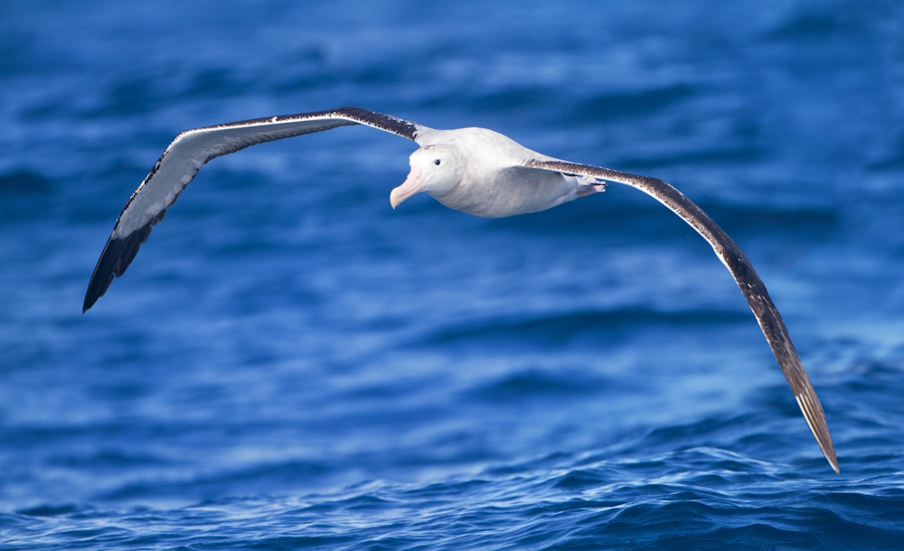
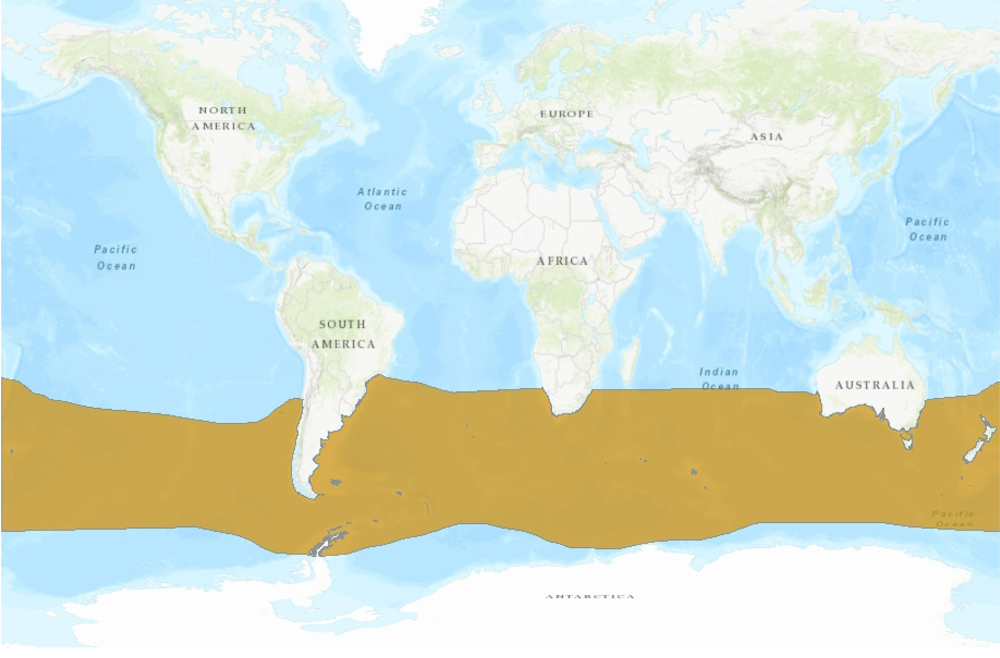
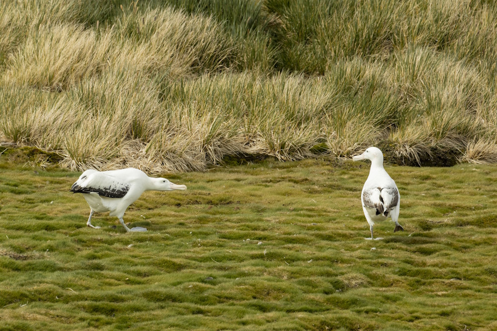
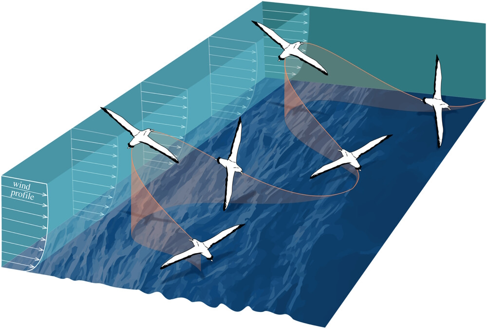
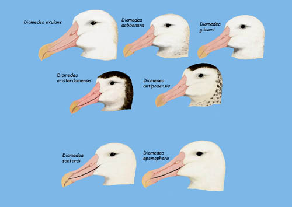
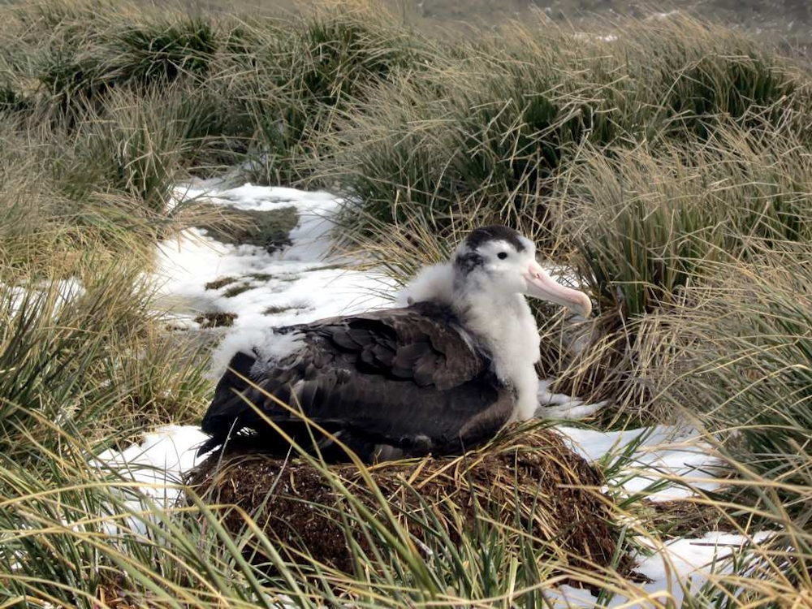
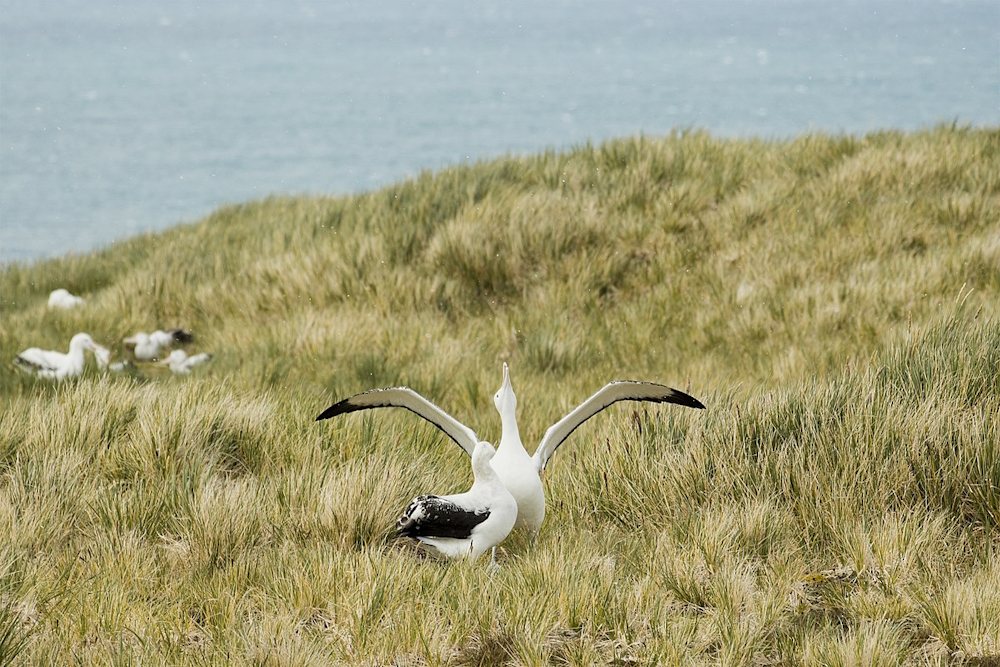
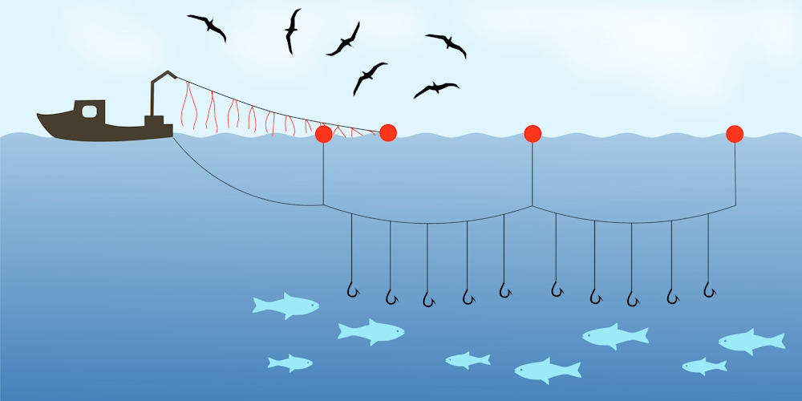

The range of D. exulans comprises the southern Pacific, Atlantic, and Indian Oceans. (Image credit: BirdLife International, 2018)
Species of the Month August 2025 - The Snowy Albatross, Diomedea exulans
01/08/2025
SotM

(Cover image credit: JJ Harrison, licensed under CC BY-SA 3.0)
The Species of the Month for August 2025 is the Snowy Albatross (Diomedea exulans). This huge species of seabird has the largest wingspan of any living bird, and spends most of its time on the open ocean. It lays only a single egg once every two years, and young albatrosses can spend up to 5 years never touching land before they are ready to return to the breeding ground. The number of Snowy Albatrosses has been declining for a few decades now, and bycatch and lost equipment from longline fishing poses a major threat to the species. Fortunately, however, there are conservation measures in place to help minimise this.
Species Overview
The Snowy Albatross (Diomedea exulans) is a large sea bird that lives throughout the southern Atlantic, Pacific and Indian Oceans, foraging on the open sea and breeding on a few specific islands (including the Crozet Archipelago in the Indian Ocean and South Georgia and the South Sandwich Islands in the southern Atlantic Ocean)[1][10][18][19][30]. It has the largest wingspan of any living bird, reaching up to 3.5 metres[10][12]. They live for 32 years on average, although it is estimated that their maximum life expectancy may be as long as 80 years. Adults weigh between 7 and 12 kilogrammes, which is around 7-10 times as heavy as the European Herring Gull (Larus argentatus)[8][24].

D. exulans exhibits sexual dimorphism (i.e. the sexes are visually distinct). Both males and females start off similarly, with dark brown feathers. In general, male albatrosses grow to be larger, heavier, and with whiter plumage than females[23][29]. Being larger than females gives male albatrosses an advantage when flying in windier conditions[23]. In fact, it has been recorded in several populations that males tend to forage in the more southern parts of the albatross’ range, which is windier than the north, where females and young albatrosses forage. This means that there is less competition between males and females for food[19][23][30].

The albatross on the left has whiter plumage than the one on the right. This could be an indicator that it is the male of the pair. (Image credit: Andrew Shiva, licensed under CC BY-SA 4.0)
Snowy Albatrosses fly using a technique called ‘dynamic soaring’, exploiting the wind with their large wings in order to travel great distances relatively quickly. They do this by flying towards the wind to gain altitude, then they start to descend and glide in the direction they want to travel[22]. They are even able to fly upwind using this technique[21]. Using dynamic soaring, Snowy Albatrosses can reach speeds of up to 80 kmph (or around 50 mph), and travel up to 900 km (~560 miles) a day[11]. As they move constantly throughout the day while foraging for food, this flight technique is very important as it means that they use very little energy in order to move around[7][31].

This diagram shows how albatrosses make alternating turns towards and away from the wind in order to move across the wind. (Image credit: Richardson and Wakefield, 2022)
The Snowy Albatross belongs to the wandering albatross species complex, along with the Tristan Albatross (D. dabbenena), the Antipodean Albatross (D. antipodensis), and Gibson’s Albatross (D. gibsoni) (though the latter two may be a single species)[2]. A species complex is a group of similar species that are extremely difficult to tell apart, which also makes it difficult for scientists to decide how to separate species.

Several species of the genus Diomedea look similar. D. exulans, D. dabbenena, D. gibsoni, and D. antipodensis make up the Wandering Albatross species complex.
The diet of the Snowy Albatross consists mostly of cephalopods (like squid) and fish[20][31]. The amount of each that they eat depends on what is available in the waters where they forage[3][4]. They have been seen foraging at night, but the vast majority of their food is eaten during the day[31]. As for the Albatross’ predators, it has none. They are apex predators[3].
The breeding cycle for Snowy Albatrosses begins around November, when mature birds travel to the breeding grounds, and can last until the following October once the chicks have fledged (developed feathers that they can use to fly)[5][25]. Albatrosses start breeding at around 9-10 years old and typically breed once every two years[16][25]. However, they breed after a single year if they lose the last egg or chick that they produced[16].

An albatross chick fledges with dark brown feathers which turn white as it gets older. (Image credit: Davis Stanley, licensed under CC BY 2.0)
Snowy Albatrosses are typically monogamous, having only one breeding partner for their entire lives[14]. When younger birds are looking for a partner, they perform a mating display consisting of gestures and noises including snapping their bills together, pointing their bill to the sky or to each other, and bowing their heads[10][18]. These displays can last up to 15 minutes, and only a quarter of them result in a female following a male back to its nest site[18].

"Sky-calling" is a common behaviour exhibited as part of Snowy Albatross courtship displays. (Image credit: Andrew Shiva, licensed under CC BY-SA 4.0)
After mating, females leave the breeding site to forage for a short time before coming back and laying a single egg[5][8]. The parents take turns looking after their egg, and the chick that hatches out of it, with the other parent leaving to forage for a while. Usually, they make sure not to be gone for too long so that the bird looking after their offspring does not lose too much mass from not eating during this time[14]. After an albatross chick has fledged, which takes 278 days on average, it quickly learns to fly and stays at sea for 1-5 years before finally returning to the breeding ground in November and trying to find a partner[8][25].
Conservation
The IUCN (International Union for Conservation of Nature) classifies the Snowy Albatross as ‘Vulnerable’, one step before ‘Endangered’. This is due to the significant decrease in population over the years (there were an estimated 28,000 individuals in 1998, compared to 20,100 in 2018)[1][6]. Because the population is projected to decrease by more than 30% over three generations (which are 23.3 years long in the case of the Snowy Albatross), they are considered ‘Vulnerable’[1][9].
The biggest threat to D. exulans is accidental death caused by longline fishing, a technique mainly used for fish like tuna (Thunnus spp.), Patagonian toothfish (Dissostichus eleginoides) and swordfish (Xiphias gladius), whereby many, smaller fishing lines are attached to one large line that is cast out into the ocean[1][15][27]. This has been shown to affect populations of Snowy Albatrosses in several areas, including the Crozet Archipelago and South Georgia[6][19][28].

Longline fishing uses many lines with baited hooks attached to a long, central line. (Image credit: Michal Klajban, licensed under CC BY-SA 4.0)
Other threats to the species include the introduction of invasive species in parts of their range. On the Kerguelen Islands in the southern Indian Ocean, it has been seen that some albatross colonies have failed to breed completely in some years, as the introduction of cats (Felis catus) has led to the predation of albatross chicks[1]. As well as this, many man-made items, including hooks and other longline fishing equipment, are ingested by Snowy Albatrosses (especially chicks) every year, leading to their deaths[3][15][17].
According to the IUCN, several conservation actions are underway to protect the Snowy Albatross. Their population is being monitored in South Georgia, the Crozet Archipelago, the Kerguelen Islands, the Prince Edward Islands in the Indian Ocean, and Macquarie Island in the Southern Ocean[1]. As well as this, the Prince Edward Islands, and parts of the Crozet and Kerguelen Islands are nature reserves, and Macquarie Island is a UNESCO World Heritage Site and protected under Australian law[1][26]. The CCAMLR (Commission for the Conservation of Antarctic Marine Living Resources) has also introduced measures that have apparently reduced albatross bycatch in the ocean around South Georgia by over 99%[1].
One way that we can help minimise the negative effects of fishing on Snowy Albatross populations is by only purchasing seafood labelled with the blue MSC (Marine Stewardship Council) logo. For seafood to be labelled with this logo, it has to meet several requirements ensuring that it is caught sustainably. This includes having measures in place to minimise the amount of gear that is lost in the ocean, which is a threat to albatross chicks[13][15][17].
The MSC logo has two variations. Both are acceptable as long as they are accompanied by an MSC Chain of Custody code (MSC-C-XXXXX) and an MSC claim. (Image credit: Marine Stewardship Council)
Would you like to nominate a species for September? Click Here to fill out the form!
References
[1] BirdLife International. 2018. Diomedea exulans. The IUCN Red List of Threatened Species 2018: e.T22698305A132640680. Available at: https://dx.doi.org/10.2305/IUCN.UK.2018-2.RLTS.T22698305A132640680.en (Accessed: 15 July 2025)
[2] Burg, T. M. and Croxall, J. P. 2004. Global population structure and taxonomy of the wandering albatross species complex. Molecular Ecology, 13(8), pp. 2345-2355. Available at: https://doi.org/10.1111/j.1365-294X.2003.02232.x (Accessed: 17/07/2025)
[3] Cherel, Y., Xavier, J. C., de Grissac, S., Trouvé, C. and Weimerskirch, H. 2017. Feeding ecology, isotopic niche, and ingestion of fishery-related items of the wandering albatross Diomedea exulans at Kerguelen and Crozet Islands. Marine Ecology Progress Series, 565, pp. 197-215. Available at: https://doi.org/10.3354/meps11994 (Accessed: 17/07/2025)
[4] Cooper, J., Henley, S. R. and Klages, N. T. W. 1992. The diet of the Wandering Albatross Diomedea exulans at Subantarctic Marion Island. Polar Biology, 12, pp. 477-484. Available at: https://doi.org/10.1007/BF00238186 (Accessed: 16/07/2025)
[5] Croxall, J. P., Black, A. D. and Wood, A. G. 2004. Age, sex and status of wandering albatrosses Diomedea exulans L. in Falkland Islands waters. Antarctic Science, 11(2), pp. 150-156. Available at: https://doi.org/10.1017/S0954102099000218 (Accessed: 18/07/2025)
[6] Croxall, J. P., Rothery, P., Pickering, S. P. C. and Prince, P. A. 1990. Reproductive Performance, Recruitment and Survival of Wandering Albatrosses Diomedea exulans at Bird Island, South Georgia. Journal of Animal Ecology, 59(2), pp. 775-796. Available at: https://doi.org/10.2307/4895 (Accessed: 17/07/2025)
[7] Denny, M. 2009. Dynamic soaring: aerodynamics for albatrosses. European Journal of Physics, 30. Available at: https://doi.org/10.1088/0143-0807/30/1/008 (Accessed: 16/07/2025)
[8] Inchausti, P. and Weimerskirch, H. 2004. Wandering Albatross (Diomedea exulans chionoptera) in the Southern Oceans. In: Akcakaya, H. R., Burgman, M. A., Kindvall, O., Wood, C. C., Sjogren-Gulve, P., Hatfield, J. S. and McCarthy, M. A. (eds.). Species Conservation and Management: Case Studies. Oxford: Oxford University Press. pp. 421-430.
[9] IUCN. (2012). IUCN Red List Categories and Criteria: Version 3.1. Second edition. Gland, Switzerland and Cambridge, UK: IUCN.
[10] Jouventin, P. and Lequette, B. 1990. The Dance of the Wandering Albatross Diomedea exulans. Emu, 90, pp. 122-131.
[11] Jouventin, P. and Weimerskirch, H. 1990. Satellite tracking of Wandering albatrosses. Nature, 343, pp. 746-748. Available at: https://doi.org/10.1038/343746a0 (Accessed: 16/07/2025)
[12] Ksepka, D. T. 2014. Flight performance of the largest volant bird. Proceedings of the National Academy of Sciences, 111(29), pp. 10624-10629. Available at: https://doi.org/10.1073/pnas.1320297111 (Accessed: 17/07/2025)
[13] Marine Stewardship Council. 2024. MSC Fisheries Standard. Available at: https://www.msc.org/docs/default-source/default-document-library/for-business/program-documents/fisheries-program-documents/msc-fisheries-standard-and-guidance-version3.1.pdf (Accessed: 19/07/2025)
[14] McCully, F. R., Weimerskirch, H., Cornell, S. J., Hatchwell, B. J., Cairo, M. and Patrick, S. C. 2022. Partner intrinsic characteristics influence foraging trip duration but not coordination of care in wandering albatrosses Diomedea exulans. Ecology and Evolution, 12(12). Available at: https://doi.org/10.1002/ece3.9621 (Accessed: 18/07/2025)
[15] Nel, D. C. and Nel, J. L. 1999.Marine Debris and Fishing Gear Associated with Seabirds at Sub-Antarctic Marion Island, 1996/97 and 1997/98 in Relation to Longline Fishing Activity. CCAMLR Science, 6, pp. 85-96.
[16] Otley, H., Reid, T., Phillips, R., Wood, A., Phalan, B. and Forster, I. 2006. Origin, age, sex and breeding status of wandering albatrosses (Diomedea exulans), northern (Macronectes halli) and southern giant petrels (Macronectes giganteus) attending demersal longliners in Falkland Islands and Scotia Ridge waters, 2001-2005. Polar biology, 30, pp. 359-368. Available at: https://doi.org/10.1007/s00300-006-0192-8 (Accessed: 18/07/2025)
[17] Phillips, R. A., Ridley, C., Reid, K., Pugh, P. J. A., Tuck, G. N. and Harrison, N. 2010. Ingestion of fishing gear and entanglements of seabirds: Monitoring and implications for management. Biological Conservation, 143(2), pp. 501-512. Available at: https://doi.org/10.1016/j.biocon.2009.11.020 (Accessed: 19/07/2025)
[18] Pickering, S. P. C. and Berrow, S. D. 2001. Courtship Behaviour of the Wandering Albatross Diomedea exulans at Bird Island, South Georgia. Marine Ornithology, 29, pp. 29-37.
[19] Prince, P. A., Wood, A. G., Barton, T. and Croxall, J. P. 2004. Satellite tracking of wandering albatrosses (Diomedea exulans) in the South Atlantic. Antarctic Science, 4(1), pp. 31-36. Available at: https://doi.org/10.1017/S0954102092000075 (Accessed: 16/07/2025)
[20] Rodhouse, P. G., Clarke, M. R. and Murray, A. W. A. 1987. Cephalopod prey of the wandering albatross Diomedea exulans. Marine Biology, 96, pp. 1-10. Available at: https://doi.org/10.1007/BF00394833 (Accessed: 16/07/2025)
[21] Richardson, P. L. 2015. Upwind dynamic soaring of albatrosses and UAVs. Progress in Oceanography, 130, pp. 146-156. Available at: https://doi.org/10.1016/j.pocean.2014.11.002 (Accessed: 16/07/2025)
[22] Richardson, P. L. and Wakefield, E. D. 2022. Observations and models of across-wind flight speed of the wandering albatross. Royal Society Open Science, 9. Available at: https://doi.org/10.1098/rsos.211364 (Accessed: 18/07/2025)
[23] Shaffer, S. A., Weimerskirch, H. and Costa, D. P. 2001. Functional significance of sexual dimorphism in Wandering Albatrosses, Diomedea exulans. Functional Ecology, 15(2), pp. 203-210. Available at: https://doi.org/10.1046/j.1365-2435.2001.00514.x (Accessed: 17/07/2025)
[24] Threlfall, W. and Jewer, D. D. 1978. Notes on the Standard Body Measurements of Two Populations of Herring Gulls (Larus argentatus). The Auk, 95(4), pp. 749-753.
[25] Tickell, W. L. N. 1968. The Biology of the Great Albatrosses, Diomedea Exulahs and Diomedea Epomophora. Antarctic Bird Studies, 12. Available at: https://doi.org/10.1029/AR012p0001 (Accessed: 16/07/2025)
[26] UNESCO. No date. Macquarie Island. [online] Available at: https://whc.unesco.org/en/list/629 (Accessed: 19/07/2025)
[27] Watson, J. W. and Kerstetter, D. W. 2006. Pelagic Longline Fishing Gear: A Brief History and Review of Research Efforts to Improve Selectivity. Marine Technology Society Journal, 40(3), pp. 6-11. Available at: https://doi.org/10.4031/002533206787353259 (Accessed: 19/07/2025)
[28] Weimerskirch, H., Åkesson, S. and Pinaud, D. 2008. Postnatal dispersal of wandering albatrosses Diomedea exulans: implications for the conservation of the species. Journal of Avian Biology, 37(1), pp. 23-28. Available at: https://doi.org/10.1111/j.2006.0908-8857.03675.x (Accessed: 16/07/2025)
[29] Weimerskirch, H., Lequette, B., and Jouventin, P. 1989. Development and maturation of plumage in the wandering albatross Diomedea exulans. Journal of Zoology, 219(3), pp. 411-421. Available at: https://doi.org/10.1111/j.1469-7998.1989.tb02589.x (Accessed: 17/07/2025)
[30] Wimerskirch, H., Salamolard, M., Sarrazin, F. and Jouventin, P. 1993. Foraging Strategy of Wandering Albatrosses Through The Breeding Season: A Study Using Satellite Telemetry. The Auk, 110(2), pp. 325-342. Available at: https://doi.org/10.1093/auk/110.2.325 (Accessed: 17/07/2025)
[31] Weimerskirch, H. and Wilson, R. P. 1992. When do wandering albatrosses Diomedea exulans forage?. Marine Ecology Progress Series, 86, pp. 297-300.
About the Author

Hi! I'm Robbie, a semi-recent graduate of animal science from Anglia Ruskin University and visitor welcome volunteer at ZSL London Zoo. My main goal professionally is to enter the world of zookeeping (don't ask how that's going so far), and this website is my way of keeping my brain occupied with zoo-related topics in the meantime.
Until about 6 months before starting university, my plan was to study linguistics. I thought it would be better to keep my professional life separate from my hobbies though, and decided to study animals and conservation very last-minute (which surprised basically everybody who knew me).
As well as my ability to make impulsive decisions that impact the rest of my life, I also have quite a few hobbies and skills (I'm a very indecisive person), including very basic web design. This site was essentially born from two of my most different interests.
Thank you for visiting, I hope you find something you like here!